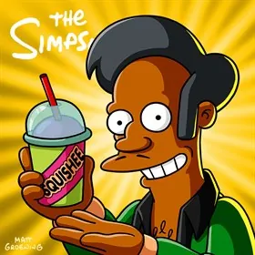

The genetics
Cloning is the episode's opening gag and frames its future. Professor Frink, a well-meaning but bumbling scientist, clones Homer after his death, and the episode's running joke is that each clone dies quickly through the same carelessness and gluttony, from a potato-salad overdose to a toaster in the bath, until 76 clones have been used up and Frink turns to storing Homer's memory digitally. The joke rests on the idea that a clone repeats the original's nature: a copy of Homer behaves like Homer, so a second chance changes nothing. The rest of the episode's science fiction, from neural implants and digital minds to zombies and robot bodies, is not genetic, and the whole future turns out to be a simulation. The cloning is played for absurd comedy rather than as a warning, and the sheep joke nods to Dolly. Real cloning produces a baby twin, not an adult copy with memories, so a cloned Homer would not even remember Marge.
How genetics is portrayed
- Overall portrayal of genetics
- neutral Cloning is a cartoon device for jokes about Homer's incorrigible nature; neither the science nor Frink is cast as dangerous or admirable.
- Outcome of the genetic intervention
- neutral The 76 clones die one after another through Homer's own carelessness, a running gag with no real weight, and the whole future turns out to be a simulation.
- Professor Frink
- neutral Aim: benevolent (positive). Frink clones Homer after his death to give him and his family a second chance, and keeps making clones for thirty years; the episode presents him as a harmless comic figure, and the jokes target Homer's recklessness rather than the scientist.
The story
Homer dies of a heart attack, and at his funeral Professor Frink reveals that he has cloned him; he had meant to start with a sheep but chose a simpler subject. Marge urges the new Homer to take his second chance seriously, but clone after clone dies through Homer's own stupidity. Thirty years later, after the death of clone number 76, Frink has run out of clones and uploads Homer's memory to a flash drive that shows him as a face on a screen; fed up, Marge hands the drive to Bart. Bart, divorced from Jenda, who is dating an alien, goes to the MovingOn clinic to forget her, sleeps around and then drifts back to her. Lisa, married to Milhouse, finds she prefers him after a zombie bites him, and turns down Dr. Hibbert's cure. Marge advises her children to stand by decisions made with the heart and joins Homer on the drive. Bart then wakes up in the present: the future was a simulation run by the clinic's neural implant.